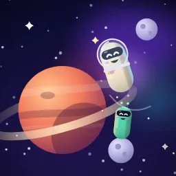

Hush Coffee
23 kişi burada
Mekan sohbeti
Mekana giriş yapan herkes okur ve yazar.
Henüz masan yok
Masa kur, arkadaşlarını çağır. Ya da açık bir masaya katıl.
Masa kur
Açık masalar
3 masa
Neşeli Panda
3 kişi
Kapsül Anlat
Katıl
Gece Baykuşu
2 kişi
İsteğin gönderildi
41 sn

Atak Tilki
4 kişi
Sohbet
Katıl
Süren masalar
1 masa
Lobide değiller. Oturduğun masa buysa "Bu masadayım"a bas, masa sahibi onaylasın.
Tatlı Yunus
6 kişi
Bu masadayım
Keşfet
Aktiviteler
Mekan
Mesajlar
Profil